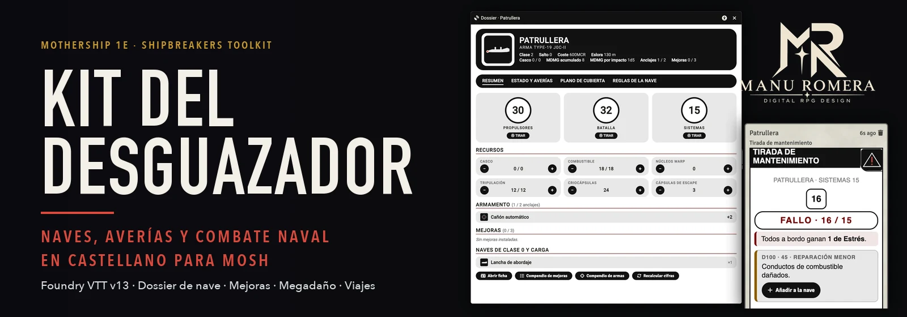
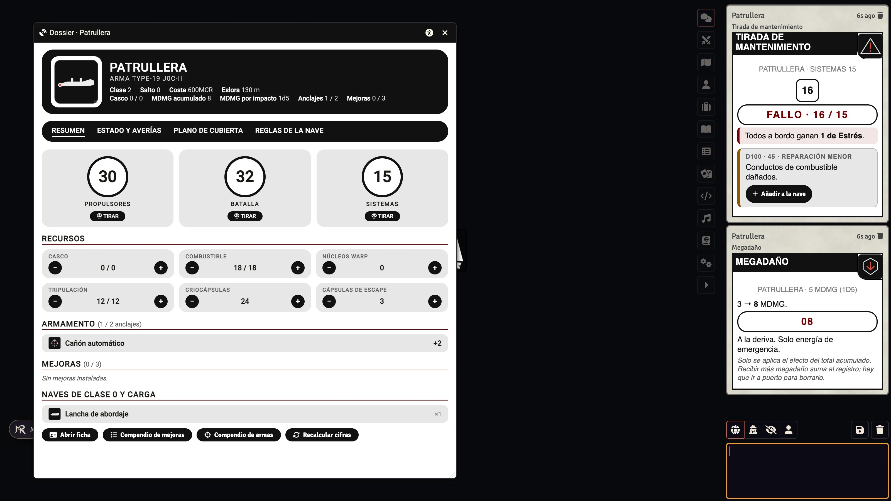
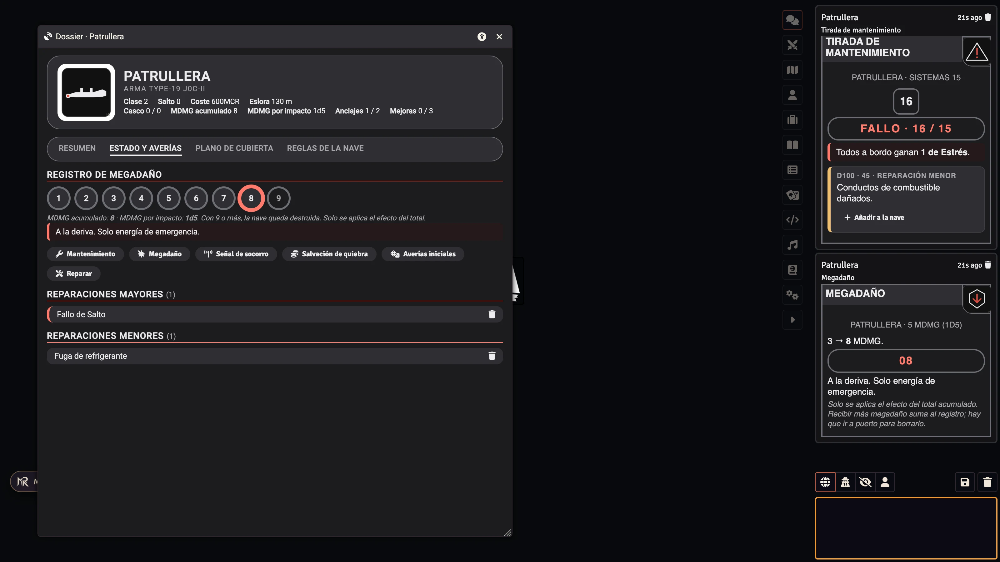
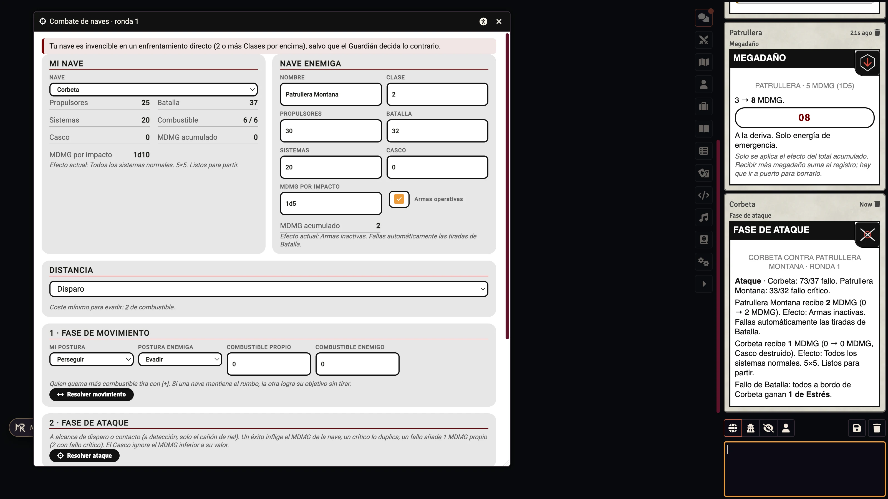
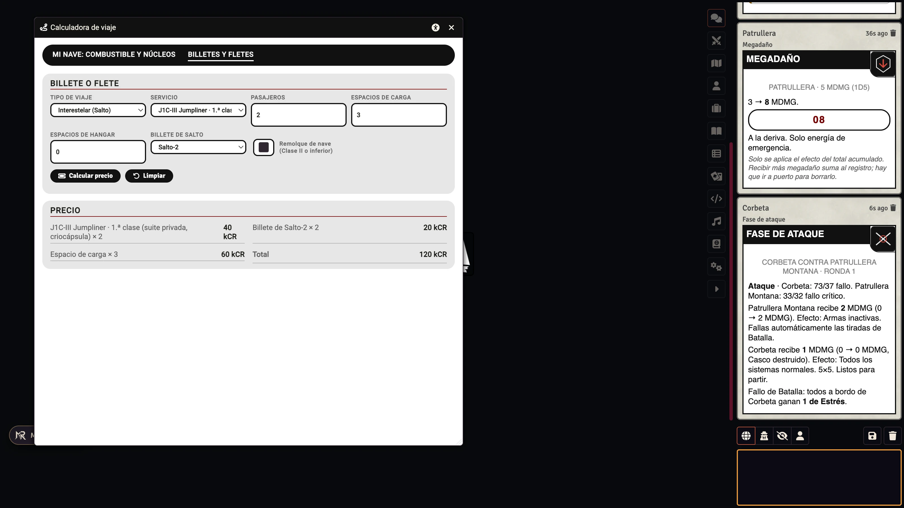

MR- Kit del Desguazador
Las naves del Shipbreakers Toolkit de Mothership, sus mejoras, armas, averías de mantenimiento, megadaño, combate naval, viajes y costes, en castellano y dentro de la ficha de nave del sistema mosh. Con el mismo aspecto que tus hojas de Mothership y compatible con el resto de módulos MR-.
Instalar
En Foundry VTT, Instalar módulo, pega este manifiesto:
https://github.com/ManuRomera/mr-kit-desguazador/releases/latest/download/module.json
Necesita Foundry VTT v13 y el sistema mosh (MoSh – Unofficial Mothership) 0.6.1 o superior. Recomendado: MR- Mothership en español.
Así se ve



